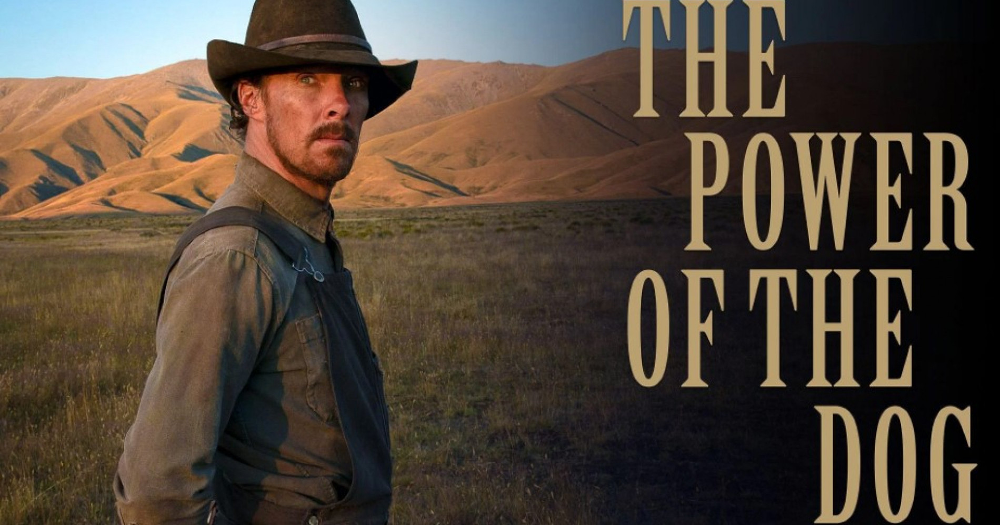
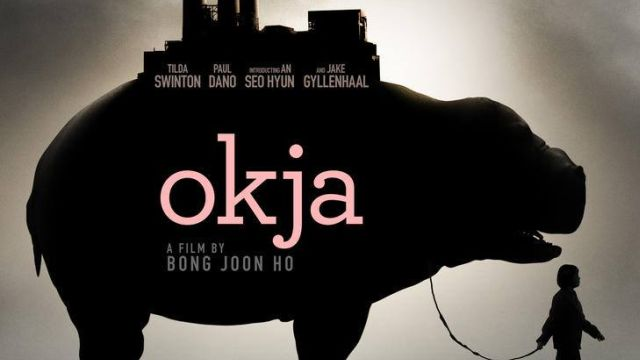
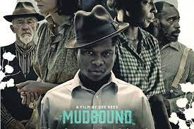
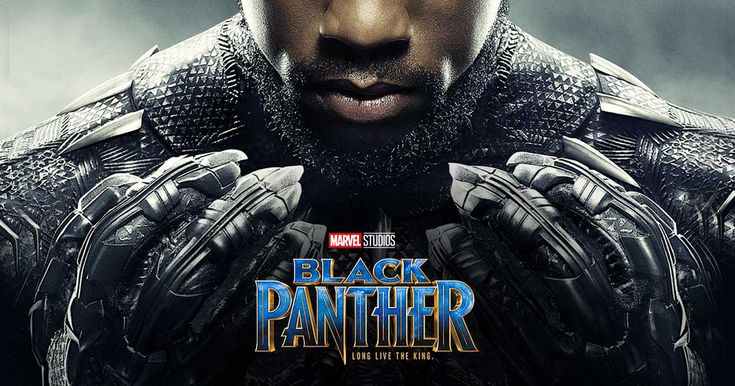
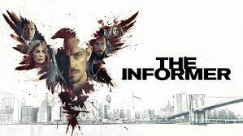
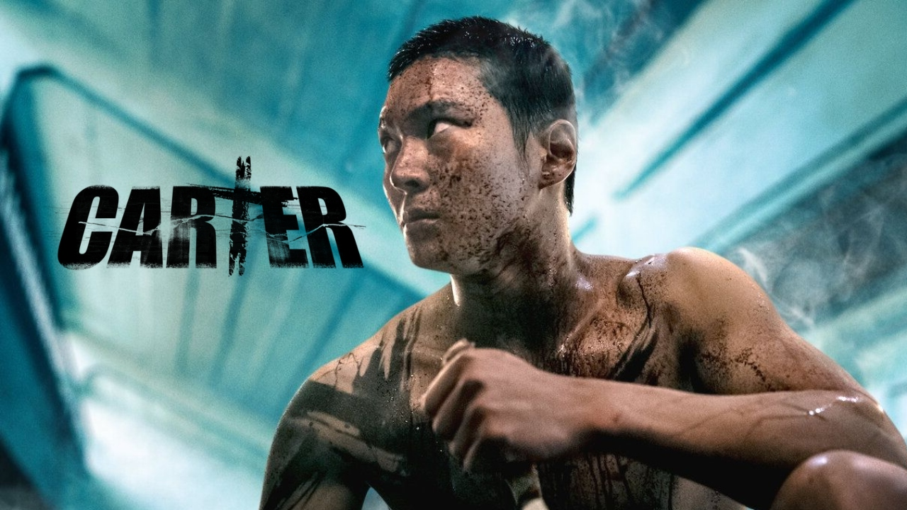

|  Image by: hypeabis.id.com |
The Power of the DogCharismatic rancher Phil Burbank inspires fear and awe in those around him. When his brother brings home a new wife and her son, Phil torments them until he finds himself exposed to the possibility of love. |
Go To |
|---|---|---|
| Image by: moviebabble.com |
RomaCleo is one of two domestic workers who help Antonio and Sofía take care of their four children in 1970s Mexico City. Complications soon arise when Antonio suddenly runs away with his mistress and Cleo finds out that she's pregnant. When Sofía decides to take the kids on vacation, she invites Cleo for a much-needed getaway to clear her mind and bond with the family. |
Go To |
| Image by: theilluminerdi.com |
Spider-Man No Way Home"Spider-Man" centers on student Peter Parker (Tobey Maguire) who, after being bitten by a genetically-altered spider, gains superhuman strength and the spider-like ability to cling to any surface. He vows to use his abilities to fight crime, coming to understand the words of his beloved Uncle Ben: "With great power comes great responsibility." |
Go To |
|  Image by: dreadcentral.com |
OkjaFor 10 idyllic years, young Mija has been caretaker and constant companion to Okja - a massive animal and an even bigger friend - at her home in the mountains of South Korea. But that changes when family-owned, multinational conglomerate Mirando Corporation takes Okja for themselves and transports her to New York, where an image-obsessed and self-promoting CEO has big plans for Mija's dearest friend. With no particular plan but single-minded in intent, Mija sets out on a rescue mission. |
Go To |
|  Image by: film-vault.fandom.com |
MudboundLaura McAllan is trying to raise her children on her husband's Mississippi Delta farm, a place she finds foreign and frightening. In the midst of the family's struggles, two young men return from the war to work the land. Jamie McAllan, Laura's brother-in-law, is everything her husband is not - charming and handsome, but he is haunted by his memories of combat. Ronsel Jackson, eldest son of the black sharecroppers who live on the McAllan farm, now battles the prejudice in the Jim Crow South. |
Go To |
|  Image by: id.pinterest.com |
Black PantherAfter the death of his father, T'Challa returns home to the African nation of Wakanda to take his rightful place as king. When a powerful enemy suddenly reappears, T'Challa's mettle as king -- and as Black Panther -- gets tested when he's drawn into a conflict that puts the fate of Wakanda and the entire world at risk. Faced with treachery and danger, the young king must rally his allies and release the full power of Black Panther to defeat his foes and secure the safety of his people. |
Go To |
| Image by: kanopy.com |
Lady BirdA nurse works tirelessly to keep her family afloat after her husband loses his job. She also maintains a turbulent bond with a teenage daughter who is just like her: loving, strong-willed and deeply opinionated. |
Go To |
|  Image by: radiotimes.com |
The InformerRecruited by the FBI, ex-con and former special operations soldier Pete Koslow uses his covert skills to try and take down the General - the most powerful crime boss in New York. When a sting results in the death of an undercover cop, Pete suddenly finds himself caught in the crossfire between the mob and the FBI. Forced to return to prison, Koslow must now come up with a plan to escape from the clutches of the law and the General to save himself and his family. |
Go To |
 Image by: indianexpress.com |
The GraymanWhen the CIA's top asset -- his identity known to no one -- uncovers agency secrets, he triggers a global hunt by assassins set loose by his ex-colleague. |
Go To |
|  Image by: marvelousvideos.com |
CarterA man wakes up missing his memories. Directed by a mysterious voice from a device in his ear, he sets off on a hostage rescue mission rife with danger. |
Go To |